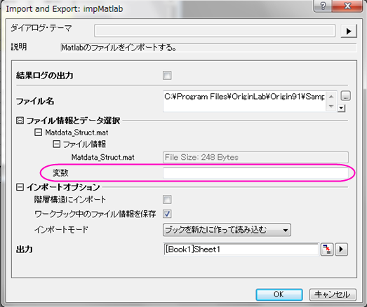
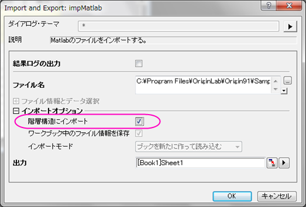
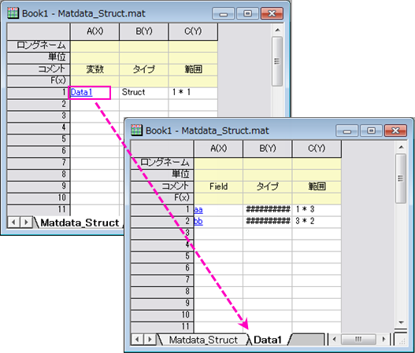
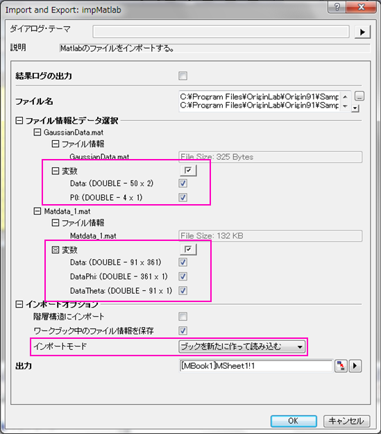
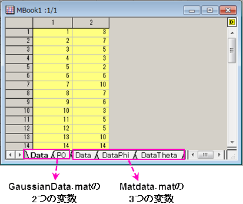

impMatlab
メニュー情報
ファイル：インポート：Matlab(Mat)
概要
Matlabファイルのインポート
コマンドラインでの使用法
impMatlab fname:="c:\test.mat";impMatlab fname:="c:\data.mat" options.impMode:=1;
変数
| 表示名 |
変数名 |
I/Oとタイプ |
デフォルト値 |
説明 |
| ファイル名 |
fname |
入力
文字列
|
fname$
|
インポートするファイルのファイル名 |
| ファイル情報とデータ選択 |
trfiles |
入力
TreeNode
|
<unassigned>
|
ファイルの情報を表示する際に使用します。ファイルのどの変数をインポートするのか指定できます。 |
| インポートオプション |
options |
入力
TreeNode
|
<unassigned>
|
これは主にダイアログ内で使用され、インポートオプションを修正する際に使用します。詳細については説明のセクションをご覧下さい。 |
| 出力 |
orng |
出力
範囲
|
<active>
|
これは出力範囲を指定するのに使用します。
シンタックスはここをご覧ください。
|
| ヘッダ情報 |
trheader |
出力
TreeNode
|
<optional>
|
これはヘッダ情報を出力するためのものです。GUIには表示されません。エンドユーザが、この変数を使用することはお勧めできません。 |
説明
このXファンクションはMatlab data ファイルをインポートするのに使います。複数のファイルを一度にインポートすることも可能で、各ファイルの変数はインポートのために選択できます。インポート先や保存された構造も指定できます。
Originでは、Matlab内のデータは次のように保存されます。
- ワークブック内に保存
- 階層構造なし：デフォルトでそれぞれのファイルにある全ての変数は同じワークシートに1つずつインポートされます。全て同じ行から開始します。
- 階層構造あり：ワークシートには変数リストのみがインポートされます。それぞれの変数名は最初の列にリンクしたテキストとして表示されます。変数名をクリックすると、目的の変数を1つずつ新しいワークシートにインポートします。
- 行列ブック内に保存
- 各変数は行列シートに保存されます。
ダイアログオプションの詳細
- 詳細は、このページをご覧ください。
サンプル
サンプル 1
このサンプルは、構造情報込みのMatlabのファイルを階層構造にインポートする方法を示しています。
- 新しいワークブックを作成し、アクティブにします。
- Originのメインメニューからファイル：インポート：Matlab(Mat)と選択します。
- Matlabダイアログでは\Samples\Import and Export\Matdata_Struct.mat をブラウズしファイルの追加ボタンをクリックします。オプションダイアログを開く、にチェックを付けてOKを押すと、impMatlab ダイアログが開きます。
- ダイアログボックスでは、ファイル情報とデータ選択の下の変数ボックスは空です。MATLABファイルのいくつかの変数はOriginではサポートされていません。デフォルト設定でファイルをインポートする場合、これらの変数は飛ばされます。

- MATLABファイル内の構造データについては、インポートオプションブランチの階層構造にインポートにチェックを付けてください。ファイル情報とデータ選択ブランチでは、ファイル情報をワークブックに保存やインポートモードオプションはグレーアウトしています。

- OK ボタンをクリックします。ファイルがインポートされます。次に、変数名をクリックして目的の変数を一つずつ、手動で新しいワークシートにインポートします。

サンプル 2
このサンプルはMatlabのデータを行列ブックにインポートするか指定します。
- 新しい行列ブックを作成し、アクティブにします。
- Originのメインメニューからファイル：インポート：Matlab(Mat)と選択します。
- Matlabダイアログで\Samples\Import and Export\ を検索し、GaussianData.mat と Matdata_1.mat(Ctrlキーを押しながらクリックして、複数ファイルを選択)を選んでからファイルの追加ボタンをクリックします。オプションダイアログを開く、にチェックを付けてOKを押すと、impMatlab ダイアログが開きます。
- ダイアログでは2つのファイルの変数がファイル情報とデータ選択ブランチに表示されます。インポートモードでは新しい行列シートで開始を選択します。

- OKボタンをクリックすると、インポートファイルは以下のようになります。

関連のXファンクション
impFile, impinfo, impFileSel